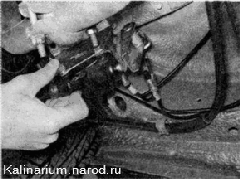

|
Для выполнения работы потребуются специальные ключи для штуцеров тормозных трубок.
Снятие
1. Подготавливаем автомобиль к выполнению работы.
2. Очищаем регулятор давления и механизм привода регулятора от грязи.
3. Обрабатываем ввернутые в регулятор штуцеры тормозных трубок проникающей смазкой.
4. Шлицевой отверткой отгибаем края фиксатора рычага.
5. Выводим рычаг из серьги.
6. К регулятору подходят четыре тормозные трубки: две подводящие (от главного тормозного цилиндра) и две отводящие (к рабочим цилиндрам). На корпусе регулятора имеются рельефные стрелки, указывающие места подсоединения подводящих и отводящих трубок. Для облегчения сборки помечаем порядок подсоединения тормозных трубок к регулятору.
7. Специальным ключом ослабляем затяжку штуцера тормозной трубки, подходящей к регулятору давления с торца, удерживая наконечник регулятора рожковым ключом на 21 мм.
8. Специальным ключом ослабляем затяжку штуцеров трех тормозных трубок, подходящих к регулятору сбоку.
9. Окончательно отворачиваем штуцеры рожковым ключом того же размера.
При отсоединении трубок от регулятора следите за тем, чтобы трубки не вращались вместе со штуцерами. Если трубки «закисли» в штуцерах, замените их.
10. Торцовым ключом на 10 мм отворачиваем две гайки крепления кронштейна регулятора к кузову автомобиля.
11. Снимаем регулятор давления в сборе с кронштейном и упругим рычагом.

12. Ключом на 13 мм отворачиваем болт заднего крепления регулятора к кронштейну. |
|
13. Ключом того же размера отворачиваем болт переднего крепления регулятора.
14. Снимаем кронштейны и рычаги с регулятора.
Установка
1. Собираем и устанавливаем регулятор в обратной последовательности.
2. Подсоединяем тормозные трубки в соответствии с нанесенными при разборке метками.
3. Затягиваем штуцеры трубок специальным ключом.
4. Прокачиваем гидравлический привод тормозной системы.
5. Регулируем привод регулятора давления.
|